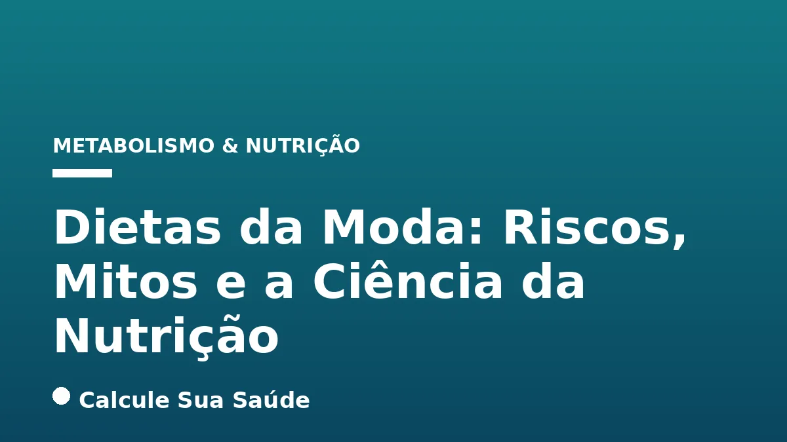

Aviso médico importante
Este conteúdo é educativo e informativo e não substitui a consulta, o diagnóstico ou o tratamento de um profissional de saúde. Em caso de sintomas, procure orientação médica.
Índice do Artigo
- 1. O Fascínio das Dietas da Moda: Uma Busca por Soluções Rápidas
- 2. O Que São as Dietas da Moda? Definição e Características Essenciais
- 3. A Promessa de Resultados Rápidos: Por Que São Tão Atraentes?
- 4. Riscos Imediatos e a Longo Prazo para a Saúde Física
- 5. O Impacto na Saúde Mental e o Risco de Transtornos Alimentares
- 6. O Efeito Sanfona: Um Ciclo Prejudicial de Ganho e Perda de Peso
- 7. Mitos Comuns Sobre Dietas da Moda vs. A Evidência Científica
- 8. A Importância da Orientação Profissional em Nutrição
- 9. Princípios da Alimentação Saudável Segundo a Ciência
- 10. Reeducação Alimentar: O Caminho para a Sustentabilidade
- 11. Estilo de Vida Saudável: Além da Alimentação
- 12. Como Identificar e Evitar Dietas da Moda
- 13. Dados Epidemiológicos no Brasil: Um Cenário de Alerta
- 14. Conclusão: Investindo na Sua Saúde a Longo Prazo
- 15. Perguntas frequentes
Em um mundo onde a imagem e a busca por resultados imediatos são constantemente valorizadas, as “dietas da moda” emergem como soluções aparentemente fáceis para o emagrecimento e a melhoria da saúde. Com promessas tentadoras de perda de peso acelerada e transformações corporais em tempo recorde, esses planos alimentares ganham popularidade rapidamente, impulsionados muitas vezes por celebridades e influenciadores digitais. No entanto, o fascínio por esses regimes muitas vezes esconde uma realidade preocupante: a falta de embasamento científico e os potenciais riscos à saúde.
No portal Calcule Sua Saúde, nosso compromisso é com a informação baseada em evidências. Diante da crescente adesão a esses modismos alimentares, torna-se imperativo analisar criticamente o que a ciência tem a dizer sobre as dietas da moda. Este artigo aprofundado visa desmistificar as alegações sensacionalistas, expor os perigos ocultos e orientar nossos leitores para escolhas nutricionais seguras, sustentáveis e verdadeiramente benéficas para a saúde a longo prazo.
Abordaremos a definição e as características comuns das dietas da moda, os fatores que as tornam tão atraentes, os impactos negativos na saúde física e mental, e as evidências científicas que sustentam uma abordagem equilibrada e individualizada para a alimentação. Nosso objetivo é fornecer o conhecimento necessário para que você possa discernir entre o que é um modismo passageiro e o que realmente contribui para o seu bem-estar.
Em resumo
- Dietas da moda são planos alimentares populares que prometem perda de peso rápida, mas carecem de suporte científico robusto e evidências de longo prazo.
- Suas características incluem promessas milagrosas, regras estritas, eliminação de grupos alimentares e foco em soluções de curto prazo, não em mudanças comportamentais sustentáveis.
- Os riscos à saúde são diversos, abrangendo deficiências nutricionais, efeito sanfona, desregulação hormonal, problemas gastrointestinais e impacto negativo na saúde mental, podendo levar a transtornos alimentares.
- A ciência desmistifica mitos como a eficácia de cortes radicais de carboidratos ou sucos detox, enfatizando que o corpo humano possui mecanismos eficientes de desintoxicação e que não existe uma dieta universalmente perfeita.
- A prevenção e o tratamento dos problemas associados às dietas da moda baseiam-se na reeducação alimentar individualizada, na adoção de um estilo de vida saudável e na busca por orientação de profissionais de saúde qualificados, como nutricionistas e endocrinologistas.
- Uma alimentação saudável e variada, conforme preconizado pela OMS e pelo Guia Alimentar para a População Brasileira, aliada à atividade física regular, é a estratégia mais eficaz e segura para a manutenção da saúde e do peso corporal ideal.
1. O Fascínio das Dietas da Moda: Uma Busca por Soluções Rápidas
A busca incessante por um “corpo perfeito” e a pressão estética imposta por padrões sociais e midiáticos são fatores poderosos que impulsionam a popularidade das dietas da moda. Em um cenário onde a gratificação instantânea é valorizada, a promessa de emagrecimento rápido e sem grande esforço se torna irresistível para muitos. As redes sociais, em particular, atuam como um terreno fértil para a disseminação desses programas dietéticos, muitas vezes veiculados por influenciadores e celebridades sem o devido embasamento científico. Essa exposição constante a imagens idealizadas e a depoimentos anedóticos cria uma falsa sensação de eficácia e segurança, levando indivíduos a ignorar os princípios da nutrição baseada em evidências em favor de atalhos perigosos.
O que muitas pessoas não percebem é que a perda de peso não é apenas uma questão de estética, mas um complexo processo fisiológico e psicológico. A ideia de que existe uma “solução mágica” para problemas de peso e saúde é um dos pilares do marketing das dietas da moda, explorando a vulnerabilidade daqueles que buscam mudanças significativas em suas vidas. No entanto, a ciência da nutrição adverte que a saúde duradoura e o controle de peso eficaz são resultados de um processo gradual, que envolve mudanças de hábitos e um compromisso com um estilo de vida saudável a longo prazo, e não de restrições extremas ou soluções temporárias.
2. O Que São as Dietas da Moda? Definição e Características Essenciais
As “dietas da moda”, ou fad diets, são planos alimentares que ganham notoriedade de forma meteórica, prometendo resultados extraordinários, como perda de peso acelerada, em um curto espaço de tempo. Diferentemente de abordagens nutricionais baseadas em evidências, elas frequentemente carecem de suporte científico robusto e são comercializadas com alegações sensacionalistas que apelam para o desejo de soluções rápidas e fáceis.
As características comuns que definem uma dieta da moda incluem:
- Promessas de perda de peso rápida ou soluções “milagrosas”: Muitas prometem a perda de 10 libras (aproximadamente 4,5 kg) em 12 dias ou mais de 22,7 kg em alguns meses, o que é fisiologicamente insustentável e perigoso.
- Regras estritas ou rígidas: Frequentemente eliminam grupos alimentares inteiros (como carboidratos, gorduras ou categorias específicas de alimentos) ou se concentram em um único alimento, criando desequilíbrios nutricionais.
- Pouca ênfase em mudanças comportamentais sustentáveis ou saúde a longo prazo: O foco é no resultado imediato, sem abordar a raiz dos problemas alimentares ou promover hábitos que possam ser mantidos ao longo da vida.
- Marketing com alegações sensacionalistas: Muitas vezes são endossadas por influenciadores ou celebridades, em vez de profissionais de saúde qualificados e evidências científicas sólidas.
- Potencial para deficiências nutricionais: Devido à restrição de alimentos que são nutritivos e essenciais para o funcionamento adequado do organismo.
A Organização Mundial da Saúde (OMS) e o Guia Alimentar para a População Brasileira, do Ministério da Saúde, preconizam uma alimentação saudável que considere princípios como adequação, equilíbrio, moderação e diversidade. Esses pilares são fundamentais para o funcionamento adequado do organismo e a preservação da saúde, em contraste com a abordagem restritiva e desequilibrada das dietas da moda.
| Característica | Dieta da Moda | Nutrição Baseada em Evidências |
|---|---|---|
| Promessas | Perda de peso rápida e milagrosa (ex: 4,5 kg em 12 dias) | Perda de peso gradual e sustentável (0,5 a 1 kg por semana) |
| Restrições | Eliminação de grupos alimentares inteiros (carboidratos, gorduras) | Inclusão de todos os grupos alimentares, com moderação e equilíbrio |
| Foco | Resultados estéticos de curto prazo | Saúde integral e bem-estar a longo prazo |
| Base Científica | Carente ou inexistente, baseada em anedotas | Fundamentada em pesquisas científicas e diretrizes de saúde |
| Sustentabilidade | Difícil de manter, leva ao efeito sanfona | Promove mudanças de hábitos duradouras |
| Orientação | Influenciadores, celebridades, livros populares | Profissionais de saúde qualificados (nutricionistas, médicos) |
3. A Promessa de Resultados Rápidos: Por Que São Tão Atraentes?
O apelo das dietas da moda reside, em grande parte, na promessa de emagrecimento rápido e com pouco esforço. Em uma sociedade que valoriza a velocidade e a conveniência, a ideia de alcançar um corpo ideal em poucas semanas ou meses é extremamente sedutora. A influência das redes sociais amplifica esse fenômeno, com a veiculação massiva de antes e depois impressionantes, muitas vezes sem contexto ou veracidade científica. Essa exposição constante cria uma percepção distorcida de que resultados drásticos são facilmente alcançáveis e, mais importante, sustentáveis.
Além disso, o que se denomina “terrorismo nutricional” contribui para a popularidade dessas dietas. Ao transformar alimentos isolados em grandes ameaças à saúde, essas abordagens geram medo e culpa em relação à alimentação, levando as pessoas a buscar soluções radicais. A ideia de que existe um “vilão” alimentar a ser eliminado simplifica uma questão complexa, oferecendo uma falsa sensação de controle. No entanto, a ciência da nutrição nos ensina que o corpo humano é um sistema complexo e que a saúde não pode ser reduzida à exclusão de um único macronutriente ou alimento.
4. Riscos Imediatos e a Longo Prazo para a Saúde Física
Embora as dietas da moda possam oferecer uma perda de peso inicial, os prejuízos à saúde, tanto a curto quanto a longo prazo, são consideráveis e bem documentados pela ciência. A restrição severa e a exclusão de grupos alimentares essenciais podem desequilibrar o organismo e comprometer funções vitais.
Deficiências Nutricionais
A restrição de grupos alimentares inteiros, como carboidratos complexos, gorduras saudáveis ou laticínios, pode levar à ingestão insuficiente de proteínas, fibras, vitaminas e minerais essenciais. Por exemplo, dietas que eliminam frutas e vegetais podem causar carência de vitaminas antioxidantes, enquanto a exclusão de laticínios sem reposição adequada pode levar à deficiência de cálcio e vitamina B12. Essas deficiências comprometem o sistema imunológico, a saúde óssea, a função cognitiva e a energia geral do corpo.
Desregulação Hormonal
Dietas restritivas podem impactar negativamente o equilíbrio hormonal. Durante períodos de privação calórica extrema, o corpo pode aumentar a secreção de grelina, conhecido como o “hormônio da fome”, e reduzir os níveis de hormônios da saciedade, como a leptina. Esse desequilíbrio hormonal intensifica a sensação de fome e a vontade de comer, dificultando a manutenção do peso a longo prazo e contribuindo para o ciclo do efeito sanfona. Além disso, estudos sugerem uma relação entre regimes de restrição de carboidratos e o aumento do risco de diabetes tipo 2.
Problemas Gastrointestinais
A exclusão de grupos alimentares específicos, como os carboidratos complexos (presentes em grãos integrais, frutas e vegetais), frequentemente resulta em uma diminuição drástica da ingestão de fibras. As fibras são cruciais para a saúde intestinal, promovendo o bom funcionamento do trânsito e alimentando a microbiota benéfica. A sua ausência pode levar a problemas como constipação, inchaço, disbiose intestinal e outros desconfortos gastrointestinais.
Outros Efeitos Adversos
Além dos riscos mencionados, as dietas da moda podem provocar uma série de outros sintomas indesejados, como insônia, dores de cabeça, fadiga crônica, irritabilidade e dificuldade de concentração. Esses sintomas são frequentemente um reflexo do estresse fisiológico imposto ao corpo pela restrição calórica e pela falta de nutrientes essenciais. A longo prazo, a adesão a esses regimes pode aumentar o risco de desenvolvimento de doenças crônicas e comprometer a qualidade de vida.
5. O Impacto na Saúde Mental e o Risco de Transtornos Alimentares
Os prejuízos das dietas da moda não se limitam ao corpo físico; eles se estendem profundamente à saúde mental. A constante preocupação com a comida, a contagem de calorias e a restrição de alimentos podem criar uma relação disfuncional e pouco saudável com a alimentação e com a própria imagem corporal. Sentimentos de culpa, medo e frustração são comuns quando os resultados prometidos não são alcançados ou quando há uma “quebra” nas regras rígidas da dieta.
Há uma relação direta e preocupante entre a veiculação e a adesão a dietas da moda e o desenvolvimento ou agravamento de transtornos alimentares, como anorexia nervosa, bulimia nervosa e transtorno da compulsão alimentar. A obsessão por um peso ideal, a restrição alimentar extrema e a distorção da imagem corporal são características que se intensificam nesse contexto. Para indivíduos predispostos, a busca por uma dieta da moda pode ser o gatilho para o início de um ciclo vicioso e perigoso. É fundamental reconhecer esses sinais e buscar ajuda profissional, que pode incluir uma equipe multidisciplinar com nutricionistas, psicólogos e médicos, para abordar tanto a saúde física quanto a mental. A saúde mental é tão vital quanto a física, e o estresse e a ansiedade gerados por regimes alimentares restritivos podem ter consequências duradouras.
6. O Efeito Sanfona: Um Ciclo Prejudicial de Ganho e Perda de Peso
Um dos resultados mais comuns e desanimadores das dietas da moda é o temido “efeito sanfona”, caracterizado pelo ciclo repetido de perda e ganho de peso. A perda de peso rápida prometida por esses regimes geralmente não reflete uma diminuição sustentável da gordura corporal. Em vez disso, grande parte do peso inicial perdido é composta por água e massa muscular, e não por tecido adiposo. Quando a dieta restritiva é abandonada – o que é quase inevitável devido à sua insustentabilidade e aos efeitos adversos – o corpo tende a recuperar os quilos perdidos, muitas vezes com um acréscimo de peso, principalmente na forma de gordura.
Esse ciclo de emagrecimento e reganho de peso é prejudicial por diversas razões. Fisicamente, ele pode levar a flutuações metabólicas, dificultando ainda mais a perda de peso em tentativas futuras. Além disso, o efeito sanfona está associado a um maior risco de problemas cardiovasculares e desequilíbrios metabólicos. Psicologicamente, ele gera frustração, desmotivação e uma sensação de fracasso, minando a autoconfiança e a crença na capacidade de manter um peso saudável. A ciência enfatiza que a perda de peso saudável e duradoura é um processo gradual que envolve mudanças de hábitos alimentares e de estilo de vida a longo prazo, e não soluções rápidas que resultam em um ciclo interminável de desilusão.
7. Mitos Comuns Sobre Dietas da Moda vs. A Evidência Científica
A popularidade das dietas da moda é alimentada por uma série de mitos que se propagam rapidamente, muitas vezes sem qualquer base científica. É crucial desmistificar essas crenças para que as escolhas alimentares sejam feitas com consciência e segurança.
Mito 1: "Dietas da moda oferecem resultados rápidos e duradouros."
O que a ciência diz: A perda de peso rápida, como mencionado, geralmente envolve a perda de água e massa muscular, e não necessariamente de gordura corporal. Essa perda é extremamente difícil de manter a longo prazo e, na maioria dos casos, leva ao "efeito sanfona". A ciência demonstra que a perda de peso saudável e duradoura é um processo gradual, que exige mudanças de hábitos alimentares e de estilo de vida que possam ser mantidos ao longo da vida, focando na reeducação e não na restrição extrema.
Mito 2: "Cortar carboidratos é a chave para emagrecer."
O que a ciência diz: Carboidratos são a principal fonte de energia do corpo e desempenham um papel vital em diversas funções, incluindo o funcionamento cerebral e a atividade física. A chave para o emagrecimento e a saúde não é cortar todos os carboidratos, mas sim escolher fontes complexas e integrais (grãos integrais, frutas, legumes, leguminosas), que são ricas em fibras, vitaminas e minerais, e evitar os refinados e açúcares adicionados. Dietas muito baixas em carboidratos podem levar a deficiências nutricionais, fadiga e irritabilidade. Para entender mais sobre os impactos do açúcar, veja nosso artigo sobre Açúcar: Efeitos no Corpo e Estratégias para Reduzir o Consumo.
Mito 3: "Sucos detox e dietas de desintoxicação eliminam toxinas do organismo."
O que a ciência diz: Há poucas informações científicas sobre a eficácia dessas dietas para a "desintoxicação". Elas utilizam alimentos de baixo valor calórico, o que pode trazer resultados rápidos para a perda de peso, mas, assim como outras fórmulas restritivas, podem causar sérios prejuízos à saúde e efeitos adversos como insônia e dor de cabeça. O corpo humano possui órgãos como fígado e rins que são altamente eficientes na desintoxicação natural, sem a necessidade de intervenções drásticas ou supostos "detoxes".
Mito 4: "Existe uma dieta perfeita que funciona para todo mundo."
O que a ciência diz: A ideia de uma dieta universal é um mito. O metabolismo individual depende de uma combinação complexa de fatores como genética, composição da microbiota intestinal, histórico de saúde, nível de atividade física e uso de medicamentos. Alimentos idênticos podem provocar reações diferentes no organismo de cada pessoa. Por isso, a abordagem mais eficaz é a individualizada, elaborada por um profissional de nutrição que considere as particularidades de cada indivíduo.
Mito 5: "Retirar glúten e leite é sempre benéfico para a saúde e ajuda a emagrecer."
O que a ciência diz: A única comprovação científica de que a retirada do glúten traz benefícios é para indivíduos com doença celíaca, alergia ao trigo ou sensibilidade não celíaca ao glúten. Não há evidências suficientes de benefícios para indivíduos saudáveis, e a exclusão pode levar à diminuição de fibras e micronutrientes, podendo até causar ganho de peso e efeitos deletérios na microbiota intestinal. Da mesma forma, a restrição de laticínios é indicada apenas para casos de alergia à proteína do leite ou intolerância à lactose; para quem não apresenta essas condições, laticínios fornecem proteínas, cálcio e vitamina B12, nutrientes importantes para a saúde óssea e muscular.
8. A Importância da Orientação Profissional em Nutrição
Diante da complexidade da nutrição e dos riscos associados às dietas da moda, a busca por orientação profissional é não apenas recomendada, mas fundamental. Um nutricionista ou endocrinologista qualificado possui o conhecimento e a expertise para avaliar as necessidades individuais, o histórico de saúde e os objetivos de cada pessoa, desenvolvendo um plano alimentar personalizado e seguro. Esse profissional pode auxiliar na identificação de deficiências nutricionais, na correção de hábitos alimentares inadequados e na promoção de uma relação saudável com a comida.
A individualização é a chave para o sucesso a longo prazo. O que funciona para uma pessoa pode não funcionar para outra, e tentar seguir dietas genéricas ou baseadas em modismos pode ser contraproducente e perigoso. Um acompanhamento profissional oferece suporte contínuo, ajustando o plano conforme a evolução do paciente e fornecendo a educação nutricional necessária para que as escolhas alimentares se tornem conscientes e autônomas. Lembre-se, o investimento em um profissional de saúde é um investimento na sua própria saúde e bem-estar.
9. Princípios da Alimentação Saudável Segundo a Ciência
Em contraste com as restrições e promessas vazias das dietas da moda, a ciência da nutrição, representada por órgãos como a Organização Mundial da Saúde (OMS) e o Ministério da Saúde do Brasil, preconiza uma abordagem holística e equilibrada para a alimentação. O Guia Alimentar para a População Brasileira, por exemplo, enfatiza que apenas uma alimentação saudável e variada promove o funcionamento adequado do organismo e preserva a saúde. Os princípios fundamentais incluem:
- Adequação: A alimentação deve suprir as necessidades nutricionais do indivíduo, considerando idade, sexo, nível de atividade física e estado de saúde.
- Equilíbrio: A dieta deve conter todos os grupos de alimentos em proporções adequadas, garantindo a ingestão de macronutrientes (carboidratos, proteínas e gorduras) e micronutrientes (vitaminas e minerais).
- Moderação: Evitar excessos e restrições extremas. Tudo pode ser consumido com moderação, dentro de um padrão alimentar saudável.
- Diversidade: Consumir uma ampla variedade de alimentos de diferentes grupos, garantindo um espectro completo de nutrientes e compostos bioativos.
Além desses princípios, a OMS destaca a importância de uma alimentação equilibrada associada à atividade física regular para prevenir doenças cardiovasculares, melhorar o sistema imunológico e promover a saúde geral. A base de uma alimentação saudável deve ser composta por alimentos in natura ou minimamente processados, com a redução do consumo de alimentos ultraprocessados, ricos em açúcares, gorduras e sódio.
10. Reeducação Alimentar: O Caminho para a Sustentabilidade
A reeducação alimentar é a abordagem mais eficaz e sustentável para alcançar e manter um peso saudável, além de promover a saúde geral a longo prazo. Diferente das dietas da moda, que são temporárias e restritivas, a reeducação alimentar foca na mudança gradual e consciente dos hábitos alimentares, transformando a relação do indivíduo com a comida. Não se trata de proibir alimentos, mas de aprender a fazer escolhas mais nutritivas, a reconhecer os sinais de fome e saciedade do corpo e a desfrutar da alimentação de forma prazerosa e equilibrada.
Um nutricionista pode auxiliar na elaboração de um plano alimentar que respeite as preferências, a cultura e a rotina de cada pessoa, tornando o processo mais fácil de ser seguido e mantido. O objetivo é devolver ao indivíduo um peso saudável e uma relação normal com a comida, livre de culpa e restrições desnecessárias. A reeducação alimentar promove a autonomia e o conhecimento, capacitando o indivíduo a fazer escolhas saudáveis por toda a vida, sem depender de regras rígidas ou soluções milagrosas.
11. Estilo de Vida Saudável: Além da Alimentação
A saúde e o bem-estar não são determinados apenas pela alimentação. Um estilo de vida saudável é um conceito abrangente que engloba diversos pilares, todos interligados e essenciais para o funcionamento ótimo do organismo. A prática de exercícios físicos regulares é um componente fundamental, não apenas para a perda e manutenção do peso, mas também para a saúde cardiovascular, a força muscular, a densidade óssea e o bem-estar mental. Atividades como a caminhada, natação ou musculação devem ser incorporadas à rotina de forma consistente.
Além da alimentação e do exercício, outros fatores cruciais incluem a qualidade do sono, a gestão do estresse e a manutenção de relações sociais saudáveis. A privação do sono pode afetar os hormônios reguladores do apetite, enquanto o estresse crônico pode levar a hábitos alimentares pouco saudáveis e ao ganho de peso. Adotar um estilo de vida saudável é um compromisso contínuo com o autocuidado, que promove não apenas a longevidade, mas também uma vida com mais energia, disposição e qualidade.
12. Como Identificar e Evitar Dietas da Moda
Saber identificar uma dieta da moda é o primeiro passo para proteger sua saúde e evitar cair em armadilhas. Preste atenção aos seguintes sinais de alerta:
- Promessas Irrealistas: Se uma dieta promete perda de peso "milagrosa" ou "rápida" (ex: mais de 1-2 kg por semana de forma consistente), desconfie.
- Restrição Severa de Alimentos: Dietas que eliminam grupos alimentares inteiros (carboidratos, gorduras, laticínios) sem justificativa médica são um sinal de alerta.
- Foco em um Único Alimento ou "Superalimento": Se a dieta gira em torno de um alimento mágico ou um suplemento exclusivo, é provável que seja um modismo.
- Falta de Base Científica: Se as alegações são baseadas em depoimentos pessoais, antes e depois, ou "estudos secretos" em vez de pesquisas científicas revisadas por pares e diretrizes de órgãos de saúde, evite.
- Regras Rígidas e Complexas: Dietas que exigem contagem obsessiva, horários fixos ou combinações específicas de alimentos sem flexibilidade são difíceis de manter e podem levar a uma relação obsessiva com a comida.
- Desconsideração da Saúde a Longo Prazo: Se a dieta não aborda a sustentabilidade dos hábitos ou os impactos na saúde geral, ela provavelmente é de curto prazo.
- Marketing Agressivo e Sensacionalista: Endossos de celebridades sem qualificação nutricional ou alegações que apelam para a emoção em vez da razão são indicativos de uma dieta da moda.
Ao se deparar com qualquer um desses sinais, é prudente questionar a validade da dieta e, idealmente, buscar a opinião de um profissional de saúde qualificado antes de iniciar qualquer mudança significativa em sua alimentação.
13. Dados Epidemiológicos no Brasil: Um Cenário de Alerta
Embora dados epidemiológicos específicos sobre a prevalência ou incidência da adesão a dietas da moda na população brasileira com números exatos sejam escassos nas fontes pesquisadas, há fortes indícios de um "aumento crescente de adeptos de dietas da moda" no país. A popularidade de termos como "dieta Low Carb", que foi "campeã de buscas no site Google em 2017", reflete o interesse generalizado por esses regimes.
Estudos e observações clínicas apontam que as dietas da moda são amplamente divulgadas no Brasil, especialmente pela internet e redes sociais, e essa disseminação se relaciona diretamente com o desenvolvimento ou agravamento de problemas de saúde, incluindo transtornos alimentares, particularmente entre jovens. A facilidade de acesso a informações não verificadas e a influência de figuras públicas sem qualificação em saúde contribuem para um cenário onde a desinformação pode ter consequências graves. É um alerta para a necessidade de maior educação nutricional e de incentivo à busca por fontes confiáveis e profissionais qualificados.
14. Conclusão: Investindo na Sua Saúde a Longo Prazo
As dietas da moda, com suas promessas sedutoras de resultados rápidos, representam um atalho perigoso no caminho para a saúde e o bem-estar. Embora possam oferecer uma perda de peso inicial, essa é frequentemente insustentável e vem acompanhada de uma série de riscos para a saúde física e mental, incluindo deficiências nutricionais, desregulação hormonal, problemas gastrointestinais, o temido efeito sanfona e, em casos mais graves, o desenvolvimento de transtornos alimentares.
A ciência da nutrição é clara: não existem soluções milagrosas ou dietas universais. O caminho para uma saúde duradoura e um peso corporal adequado reside na adoção de uma alimentação equilibrada, variada e moderada, aliada à prática regular de atividade física e a um estilo de vida saudável. A reeducação alimentar, guiada por profissionais qualificados como nutricionistas e endocrinologistas, é a estratégia mais segura e eficaz, pois foca na construção de hábitos sustentáveis e em uma relação saudável e consciente com a comida.
No Calcule Sua Saúde, reforçamos a importância de questionar as promessas sensacionalistas e de buscar informações baseadas em evidências. Investir na sua saúde significa investir em conhecimento, em autocuidado e na orientação de especialistas. Escolha o caminho da ciência e do equilíbrio para uma vida plena e saudável, livre das armadilhas das dietas da moda.
15. Perguntas frequentes
O que são dietas da moda?
Dietas da moda são planos alimentares que ganham popularidade rapidamente, prometendo resultados dramáticos, como perda de peso acelerada, em um curto período. Elas geralmente carecem de forte suporte científico e evidências robustas para suas promessas.
Quais são os principais riscos das dietas da moda para a saúde?
Os principais riscos incluem deficiências nutricionais devido à restrição de grupos alimentares, o efeito sanfona (ganho e perda de peso repetidos), desregulação hormonal, problemas gastrointestinais e um impacto negativo significativo na saúde mental, podendo levar a transtornos alimentares.
As dietas da moda realmente funcionam para emagrecer?
Inicialmente, podem causar perda de peso rápida, mas essa perda geralmente é de água e massa muscular, não de gordura corporal. É difícil de manter a longo prazo e frequentemente resulta no efeito sanfona, com recuperação do peso perdido e, muitas vezes, um acréscimo.
É verdade que cortar carboidratos ou glúten sempre ajuda a emagrecer?
Não. Carboidratos são a principal fonte de energia do corpo e devem ser escolhidos em suas formas complexas. A exclusão de glúten ou leite só é comprovadamente benéfica para pessoas com condições específicas, como doença celíaca ou intolerância à lactose, e não há evidências de benefícios para indivíduos saudáveis.
Como posso identificar uma dieta da moda?
Dietas da moda frequentemente prometem resultados milagrosos, impõem regras estritas, eliminam grupos alimentares, focam em soluções de curto prazo, são promovidas por celebridades e carecem de embasamento científico. Desconfie de qualquer plano que pareça bom demais para ser verdade.
Qual é a melhor abordagem para uma perda de peso saudável e duradoura?
A melhor abordagem é a reeducação alimentar individualizada, focada em mudanças de hábitos a longo prazo, uma alimentação saudável e variada (adequação, equilíbrio, moderação e diversidade), e a prática regular de atividade física, sempre com orientação de profissionais de saúde qualificados.
Sucos detox realmente desintoxicam o corpo?
Não há evidências científicas robustas que comprovem a eficácia dos sucos detox para desintoxicar o organismo. O corpo humano possui órgãos como fígado e rins que são naturalmente eficientes em seus processos de desintoxicação, sem a necessidade de intervenções drásticas.
Por que a orientação de um nutricionista é tão importante?
Um nutricionista pode desenvolver um plano alimentar individualizado, respeitando suas necessidades e características, garantindo que você receba todos os nutrientes essenciais. Ele oferece suporte e educação nutricional para que você construa hábitos saudáveis e sustentáveis, evitando os riscos das dietas da moda.
Leia também
Referências e Fontes
1. FENACEF Saúde. Os riscos das dietas da moda. Publicado em 14 de outubro de 2026. Disponível em: fenacefsaude.com.br
2. TNH1. Dietas da moda: o que é mito, o que é verdade e quais os riscos. Publicado em 16 de outubro de 2025. Disponível em: tnh1.com.br
3. Unilasalle. DIETAS DA MODA: COMO ELAS AFETAM A SAÚDE? Disponível em: vertexaisearch.cloud.google.com
4. Correio Braziliense. 7 mitos sobre dietas da moda que você precisa saber urgentemente! Publicado em 10 de abril de 2025. Disponível em: correiobraziliense.com.br
5. Ocean Drop. Dietas da moda: quais os riscos e 8 exemplos. Publicado em 13 de novembro de 2025. Disponível em: vertexaisearch.google.com
6. Nutrição Saúde MS. Dietas da Moda: quais são os riscos? Disponível em: nutricao.saude.ms.gov.br
7. Encyclopedia.com. Mayo Clinic Diet (Fad Diet). Disponível em: vertexaisearch.cloud.google.com
8. abril.com.br. Por que dietas da moda falham? Disponível em: saude.abril.com.br